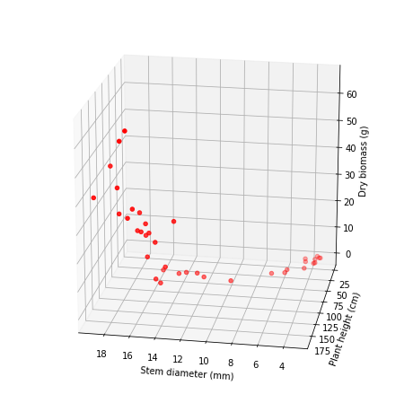
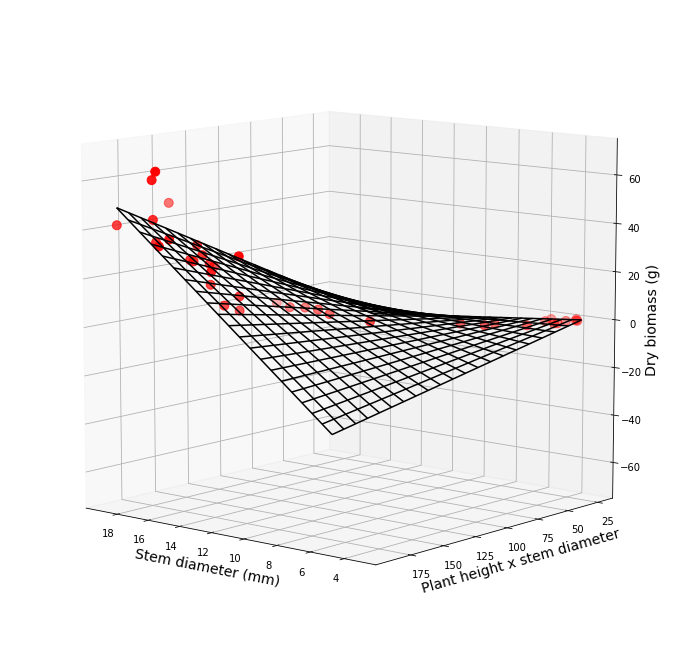

Multiple Linear Regression Analysis¶
import pandas as pd
import numpy as np
import matplotlib.pyplot as plt
from mpl_toolkits import mplot3d
import statsmodels.api as sm
data = pd.read_csv("../datasets/corn_allometric_biomass.csv")
data.head(5)
| height_cm | stem_diam_mm | dry_biomass_g | |
|---|---|---|---|
| 0 | 71.0 | 5.7 | 0.66 |
| 1 | 39.0 | 4.4 | 0.19 |
| 2 | 55.5 | 4.3 | 0.30 |
| 3 | 41.5 | 3.7 | 0.16 |
| 4 | 40.0 | 3.6 | 0.14 |
# Plot raw dataa and fitted model
# Necessary import for 3d plots.
# Great tutorial: https://jakevdp.github.io/PythonDataScienceHandbook/04.12-three-dimensional-plotting.html
fig = plt.figure(figsize=(8,8))
ax = plt.axes(projection='3d')
# Data for three-dimensional scattered points
zdata = data.dry_biomass_g
xdata = data.stem_diam_mm
ydata = data.height_cm
ax.scatter3D(xdata, ydata, zdata, c='r');
ax.set_xlabel('Stem diameter (mm)')
ax.set_ylabel('Plant height (cm)')
ax.set_zlabel('Dry biomass (g)')
ax.view_init(elev=20, azim=100)
plt.show()
# elev=None, azim=None
# elev = elevation angle in the z plane.
# azim = stores the azimuth angle in the x,y plane.

# Multiple Linear Regression using Python- and Matlab-style formula input
# Requires specifying the intercept using an array of ones.
# Full model
X = np.column_stack((np.ones(data.shape[0]),
data.height_cm,
data.stem_diam_mm,
data.height_cm * data.stem_diam_mm)) # interaction term
X
array([[1.00000e+00, 7.10000e+01, 5.70000e+00, 4.04700e+02],
[1.00000e+00, 3.90000e+01, 4.40000e+00, 1.71600e+02],
[1.00000e+00, 5.55000e+01, 4.30000e+00, 2.38650e+02],
[1.00000e+00, 4.15000e+01, 3.70000e+00, 1.53550e+02],
[1.00000e+00, 4.00000e+01, 3.60000e+00, 1.44000e+02],
[1.00000e+00, 7.70000e+01, 6.70000e+00, 5.15900e+02],
[1.00000e+00, 6.40000e+01, 5.60000e+00, 3.58400e+02],
[1.00000e+00, 1.12000e+02, 9.50000e+00, 1.06400e+03],
[1.00000e+00, 1.81000e+02, 1.71000e+01, 3.09510e+03],
[1.00000e+00, 1.70000e+02, 1.59000e+01, 2.70300e+03],
[1.00000e+00, 1.89000e+02, 1.64000e+01, 3.09960e+03],
[1.00000e+00, 1.71000e+02, 1.56000e+01, 2.66760e+03],
[1.00000e+00, 1.84000e+02, 1.60000e+01, 2.94400e+03],
[1.00000e+00, 1.86000e+02, 1.69000e+01, 3.14340e+03],
[1.00000e+00, 1.71000e+02, 1.45000e+01, 2.47950e+03],
[1.00000e+00, 1.82000e+02, 1.72000e+01, 3.13040e+03],
[1.00000e+00, 1.89000e+02, 1.89000e+01, 3.57210e+03],
[1.00000e+00, 1.88000e+02, 1.63000e+01, 3.06440e+03],
[1.00000e+00, 1.50000e+02, 1.45000e+01, 2.17500e+03],
[1.00000e+00, 1.66000e+02, 1.58000e+01, 2.62280e+03],
[1.00000e+00, 1.59000e+02, 1.82000e+01, 2.89380e+03],
[1.00000e+00, 1.59000e+02, 1.47000e+01, 2.33730e+03],
[1.00000e+00, 1.62000e+02, 1.53000e+01, 2.47860e+03],
[1.00000e+00, 1.56000e+02, 1.40000e+01, 2.18400e+03],
[1.00000e+00, 1.65000e+02, 1.51000e+01, 2.49150e+03],
[1.00000e+00, 1.68000e+02, 1.53000e+01, 2.57040e+03],
[1.00000e+00, 1.57000e+02, 1.55000e+01, 2.43350e+03],
[1.00000e+00, 1.67000e+02, 1.31000e+01, 2.18770e+03],
[1.00000e+00, 1.17000e+02, 1.16000e+01, 1.35720e+03],
[1.00000e+00, 1.18500e+02, 1.30000e+01, 1.54050e+03],
[1.00000e+00, 1.19500e+02, 1.21000e+01, 1.44595e+03],
[1.00000e+00, 1.24000e+02, 1.35000e+01, 1.67400e+03],
[1.00000e+00, 1.17000e+02, 1.49000e+01, 1.74330e+03],
[1.00000e+00, 3.25000e+01, 4.50000e+00, 1.46250e+02],
[1.00000e+00, 2.40000e+01, 3.60000e+00, 8.64000e+01],
[1.00000e+00, 3.15000e+01, 3.70000e+00, 1.16550e+02],
[1.00000e+00, 2.75000e+01, 3.30000e+00, 9.07500e+01],
[1.00000e+00, 2.75000e+01, 3.40000e+00, 9.35000e+01]])
# Run Ordinary Least Squares to fit the model
model = sm.OLS(data.dry_biomass_g, X)
results = model.fit()
print(results.summary())
OLS Regression Results
==============================================================================
Dep. Variable: dry_biomass_g R-squared: 0.849
Model: OLS Adj. R-squared: 0.836
Method: Least Squares F-statistic: 63.71
Date: Mon, 30 Mar 2020 Prob (F-statistic): 4.87e-14
Time: 14:23:31 Log-Likelihood: -129.26
No. Observations: 38 AIC: 266.5
Df Residuals: 34 BIC: 273.1
Df Model: 3
Covariance Type: nonrobust
==============================================================================
coef std err t P>|t| [0.025 0.975]
------------------------------------------------------------------------------
const 18.8097 6.022 3.124 0.004 6.572 31.048
x1 -0.1830 0.119 -1.541 0.133 -0.424 0.058
x2 -4.5537 1.222 -3.727 0.001 -7.037 -2.070
x3 0.0433 0.007 6.340 0.000 0.029 0.057
==============================================================================
Omnibus: 9.532 Durbin-Watson: 2.076
Prob(Omnibus): 0.009 Jarque-Bera (JB): 9.232
Skew: 0.861 Prob(JB): 0.00989
Kurtosis: 4.692 Cond. No. 1.01e+04
==============================================================================
Warnings:
[1] Standard Errors assume that the covariance matrix of the errors is correctly specified.
[2] The condition number is large, 1.01e+04. This might indicate that there are
strong multicollinearity or other numerical problems.
Height (x1) does not seem to be significant (high p-value and ranges including zero value). Run again prunning non-significant variables. Cannot remove the variables and use previous coefficients!
# Run a prunned model
X = np.column_stack((np.ones(data.shape[0]), data.stem_diam_mm, data.height_cm*data.stem_diam_mm))
model_prunned = sm.OLS(data.dry_biomass_g, X)
results_prunned = model_prunned.fit()
print(results_prunned.summary())
results_prunned.params
# New fitting has:
# r-squared remains similar
# one less parameter
# Higher F-Statistic 90 vs 63
# AIC remains similar
OLS Regression Results
==============================================================================
Dep. Variable: dry_biomass_g R-squared: 0.838
Model: OLS Adj. R-squared: 0.829
Method: Least Squares F-statistic: 90.81
Date: Mon, 30 Mar 2020 Prob (F-statistic): 1.40e-14
Time: 15:35:06 Log-Likelihood: -130.54
No. Observations: 38 AIC: 267.1
Df Residuals: 35 BIC: 272.0
Df Model: 2
Covariance Type: nonrobust
==============================================================================
coef std err t P>|t| [0.025 0.975]
------------------------------------------------------------------------------
const 14.0338 5.263 2.666 0.012 3.349 24.719
x1 -5.0922 1.194 -4.266 0.000 -7.515 -2.669
x2 0.0367 0.005 6.761 0.000 0.026 0.048
==============================================================================
Omnibus: 12.121 Durbin-Watson: 2.194
Prob(Omnibus): 0.002 Jarque-Bera (JB): 13.505
Skew: 0.997 Prob(JB): 0.00117
Kurtosis: 5.135 Cond. No. 8.80e+03
==============================================================================
Warnings:
[1] Standard Errors assume that the covariance matrix of the errors is correctly specified.
[2] The condition number is large, 8.8e+03. This might indicate that there are
strong multicollinearity or other numerical problems.
const 14.033781
x1 -5.092159
x2 0.036719
dtype: float64
# Plot points with predicted model (which is a surface)
fig = plt.figure(figsize=(12,12))
ax = plt.axes(projection='3d')
# Data for three-dimensional scattered points (same code as in previous plot)
zdata = data.dry_biomass_g
xdata = data.stem_diam_mm
ydata = data.height_cm
ax.scatter3D(xdata, ydata, zdata, c='r', s=80);
ax.set_xlabel('Stem diameter (mm)')
ax.set_ylabel('Plant height (cm)')
ax.set_zlabel('Dry biomass (g)')
# Xgrid is grid of stem diameter
x = np.linspace(data.stem_diam_mm.min(), data.stem_diam_mm.max(), 21)
# Ygrid is grid of plant height
y = np.linspace(data.height_cm.min(), data.height_cm.max(), 21)
# We generate a 2D grid
Xgrid, Ygrid = np.meshgrid(x, y)
intercept = np.ones(Xgrid.shape)
# Z is the elevation of this 2D grid
# You can also use the sm.OLS.predict() method but I decided to do it this way to show
# few more details
Zgrid = intercept*results_prunned.params[0] + Xgrid*results_prunned.params[1] + Xgrid*Ygrid*results_prunned.params[2]
# Plot the data
surf = ax.plot_wireframe(Xgrid, Ygrid, Zgrid, color='black')
# Alternative:
#surf = ax.plot_surface(Xgrid, Ygrid, Zgrid, cmap=plt.cm.coolwarm,rstride=1, cstride=1)
ax.set_xlabel('Stem diameter (mm)',fontsize=14)
ax.set_ylabel('Plant height x stem diameter',fontsize=14)
ax.set_zlabel('Dry biomass (g)',fontsize=14)
ax.view_init(10, 130)
